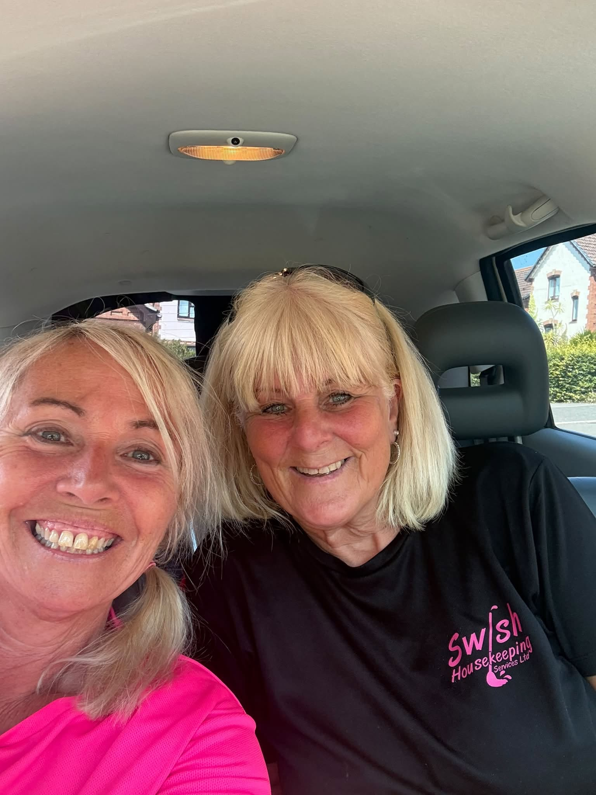

A local team that gets stuck in.
Cleaning, ironing, errands, companionship and practical home help from Sarah and the Swishers — with plenty of personality and no fuss.
Help with the jobs that need doing.
Some customers want regular cleaning. Others need ironing, shopping, a hand around the house or simply someone friendly to pop in.
See all servicesCleaning
Homes, holiday lets, offices and other local spaces.
Ironing
Done for you and returned, so it is one less thing on the list.
Errands
Shopping, collections, deliveries and everyday practical jobs.
Companionship
Friendly visits, a cuppa, a chat and practical help where useful.
Friendly, colourful and serious about doing a good job.
Swish is not a franchise or a faceless cleaning company. Sarah started the business in Dawlish in 2014 and the team has grown by looking after people properly.
The Swishers are insured and DBS checked, use professional products, and are trained in the work they carry out.


What the Swishers have been up to.
It is rarely just one type of job. Recent weeks have included everything from everyday homes to community events and a TV set.
Bergerac
The team had the chance to clean on the set of the TV series.
Dawlish Carnival
Helping with the marquee, the parade and plenty behind the scenes.
A very busy week
More than 130 homes, plus offices, a theatre, salon, village hall, holiday lets and more.
See Swish in action.
A quick look at the team getting stuck into a recent job.
Watch on FacebookTell Sarah what would make life easier.
You do not need to know which service fits. Just explain what you need.